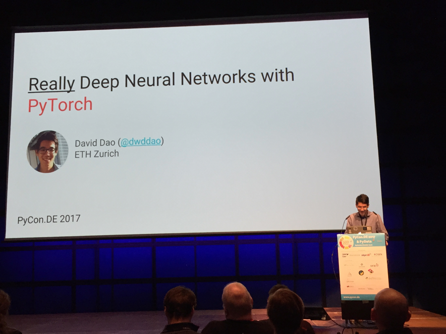
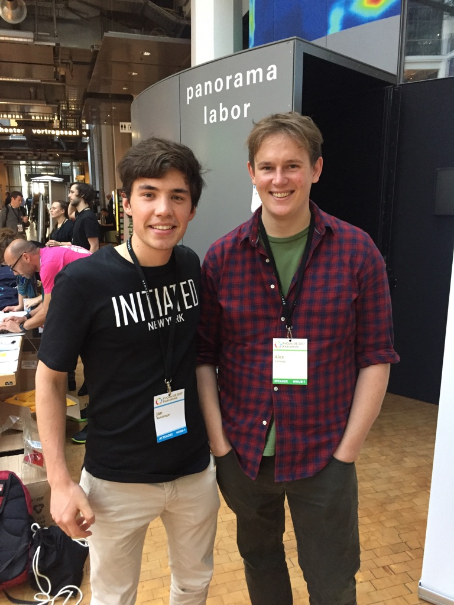

After the amazing EuroSciPy I started looking for other similar conferences. I was lucky and only had to wait two more months till PyConDE. As opposed to EuroSciPy, the audience at PyConDE had less an academic but rather an industry background. There were engineers from companies of all sizes but definitely a lot more from smaller companies.
I found a couchsurfing accomodation last minute. I only mention this because it was probably my best couchsurfing experience so far. My host was a cook turned internet entrepreneur with a mexican girlfriend. They had invited two exchange students from Venezula to discuss a charity project. Their idea was to help people in Venezula who suffer from huge inflation by enabling them to mine coins and getting back dollars. It only works because they have flatrate electricy contracts that means they can use as much electricty as they want without paying more. The tapas were great, the discussion interesting - obviously I didn’t get much sleep.
My goal for this conference was to get a better understanding of how Machine Learning algorithms are applied in industry, what the key challenges are and which skills I lack the most.
On the way to the venue I met a fellow attende who works as a backend engineer at a pretty successful hotel search company. We got along pretty well. He offered to look at the code of one a side proejct. I barely get feedback on my code so this was an invaluable opportunity for me. Later he introduced me to a collegue who works on the ML pipeline at their company. He provided some valuable insights about job hunting and on which skills I should focus. He doesn’t take full time offers anymore because he can get a much higher salary when employed as a contractor. Skillwise he mentioned that one should try to understand the whole pipeline and not just a small aspect of it.
These kind of discussions are where I get the most out of. So I tried to get into as many of such discussions as possible. Sometimes I realize that
and he introduced me to his
EuroSciPy (End of August) Bits & Pretzels (End of september) PyConDe (October) Frankfurt Marathon (October)
Met a guy backend stuff introduced me to his friend who does ML stuff.


Alex Conway & David Dao
I was exhausted three days was too much for me. (Marathon)
Recognized some faces (small community, fast.ai)
As always, I would love to hear your feedback!
Shoot me an email: info(at)janruettinger.com